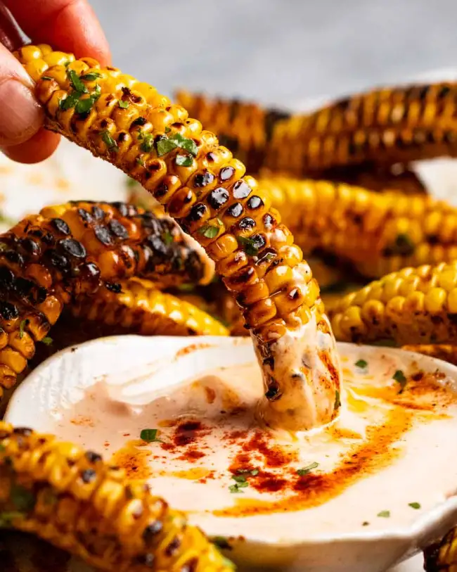

Corn Ribs

These finger licking good nuggets of glory will have your party guests buzzing! These are the perfect appetizer or side to a great BBQ or tailgating event.
***DISCLAIMER***
Make sure you are very careful while cutting the corn for this recipe! Use a sharp knife and a non-slip cutting board!
Ingredients
- 4 whole corn cobs
- 3 tbsp extra virgin olive oil
- 2 tbsp parsley or coriander/cilantro
For the Seasoning
- 1 1/2 tsp garlic powder
- 2 1/2 tsp smoked paprika
- 2 tsp cooking/kosher salt
- 2 tsp black pepper
For the Garlic Butter
- 3 tbsp unsalted butter
- 1 minced garlic clove
Instructions
- First thing first, cut the corn VERY CAREFULLY into quarters
- Light the grill up to about 375 degrees (also works in the oven)
- While the grill is warming up, melt the 3 tbsp of butter in a small saucepan and then add the minced garlic clove. Cook for about 20 seconds
- Mix all of the seaonings into a small bowl
- Put the corn in a seperate large bowl and add 3 tbsp olive oil
- Toss the corn in the oil to coat, then sprinkle to seasoning mixture on top and toss to coat as evenly as possible
- Put the corn on the grill kernal side down and cook for about 8 minutes, or until you get charred spots
- If making this in the oven, bake for about 25 to 30 minutes
- Once the corn is done, put it in a large bowl and pour the garlic butter over it and toss
- Serve this up on a large platter and eat it like ribs!